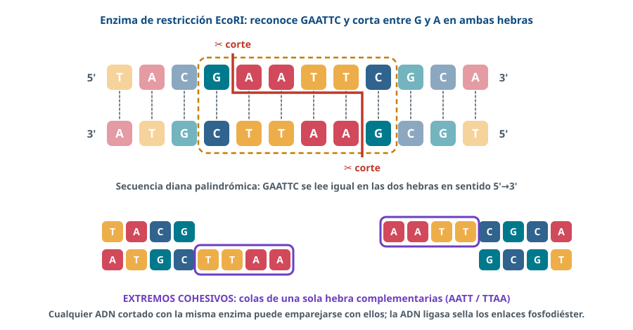

Ingeniería genética y biotecnología
Todo lo esencial para repasar. Resaltado = palabra clave de los criterios de corrección.
1 · Conceptos y herramientas
- Ingeniería genética: técnicas que permiten manipular y modificar el material genético.
- ADN recombinante: ADN de organismos diferentes unido en el laboratorio.
- OMG: genoma modificado; transgénico: OMG con un gen de otra especie.
- Enzimas de restricción: cortan el ADN en secuencias concretas (palindrómicas) → extremos cohesivos. Ligasa: une (fosfodiéster).
- Vectores: plásmidos (gen marcador de resistencia) y bacteriófagos; liposomas.
- Transcriptasa inversa: ARNm → ADNc sin intrones, expresable en bacterias.

2 · Insulina recombinante
- Aislar el gen.
- Cortar gen y plásmido con la misma enzima.
- Unir con ligasa → ADN recombinante.
- Introducir en la bacteria; seleccionar con antibiótico.
- Cultivar y extraer la insulina.
Orden PAU 2024: D, C, E, B, A. Funciona por el código genético universal.
3 · PCR
- Reactivos: ADN molde, cebadores, desoxirribonucleótidos, Taq polimerasa (termoestable).
- 1 desnaturalización (95 ºC, rompe puentes de H); 2 hibridación de cebadores; 3 extensión (72 ºC).
- n ciclos → 2ⁿ copias. Específica y sensible.
- Diagnóstico, forense, paternidad.
4 · Electroforesis
- ADN (carga −) migra al polo +.
- Pequeños más lejos; marcador de tamaño conocido.
- Paternidad: cada banda del hijo/a viene de la madre o del padre.
5 · Secuenciación
- Orden de los nucleótidos (sin fundamento técnico).
- Sirve para diseñar cebadores y ARN guía, localizar genes y sitios de restricción, comparar muestras.
6 · CRISPR-Cas
- Edición genética: cortar en un punto exacto para inactivar, corregir o insertar.
- ARN guía (complementario) + Cas9 (endonucleasa que corta el ADN).
- Origen: defensa de bacterias frente a virus.
7 · Terapia génica
- Introducir, modificar o reemplazar genes para tratar enfermedades.
- Ex vivo (células extraídas y reinyectadas) o in vivo (vector vírico).
- Solo células somáticas.
8 · Aplicaciones
- Insulina, hormonas, vacunas; animales modelo de enfermedades.
- Maíz Bt, plantas resistentes a herbicidas.
- Andalucía: trigo apto para celíacos (IAS-CSIC); terapias avanzadas.
⚠️ Errores que restan
- «La ligasa corta el ADN»: lo cortan las enzimas de restricción.
- «En la desnaturalización se rompen los enlaces fosfodiéster»: no, los puentes de H.
- «Los fragmentos grandes avanzan más»: al revés.